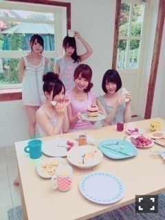
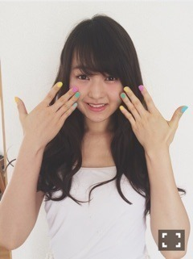

| 2015/05 21 Thu | 錆び扇風機。643回目 |

飛鳥、万理華、美彩、みなみ、未央奈
週刊少年マガジン
じょしらくの5人載ってます。
それぞれ役も違うよ∠( 'ω')／

リアル鼻にクリーム
5月24日 B.L.T.
6月2日 Gザテレビジョン
6月7日 MdN
6月9日 UTB＋
6月20日 月刊ヤングマガジン
MdNで連載がスタートします！
以前、乃木坂の特集を
組んでいただいたのをきっかけに
始まることになりました...
連載2本目です＼(^o^)／わーい
デザイン専門雑誌なので
手に取る機会が少ないと思いますが、
乃木坂特集号を読んだ方は
興味持ったのではないでしょうか？
本当に面白いんです！
私の大好きな
タイポグラフィーやデザイン、
作品の裏側が楽しく読める雑誌。
だから特集してもらった時は
感激したな(#^.^#)
そんな雑誌で連載を組めるなんて
本当に幸せです。
クリエイターさんと対談企画。
こんなためになる連載他にないよー
MdN、これから
よろしくお願いします！
CUTiE連載も引き続き頑張る！
1ページ1ページ作っていくの
大変だけどすごく楽しいです。
次号もお楽しみに！
今月号の連載
チリチリ付けて屋上で撮った図

同じタイミングで撮った写真
手に持ってるのは大好きな
MANさんのクラッチバッグ∠( 'ω')／
MAN可愛いのです。
夏はmameのクラッチバッグ
いっぱい使おう＼(^o^)／
はぁー買い物行きたーい
...
映画「アイズ」
◎予告編
◎完成披露試写会
5月28日 イオンシネマ板橋
◎舞台挨拶
6月6日 イオンシネマ板橋
6月9日 なんばパークスシネマ
6月13日 イオンシネマ板橋
イオンシネマ春日部
イオンシネマ幕張
6月14日 中川コロナ
試写会よろしくお願いします。
舞台挨拶も決定しました！
ぜひお越しください！

まりか
コメント(602)
2015/05/21 17:30